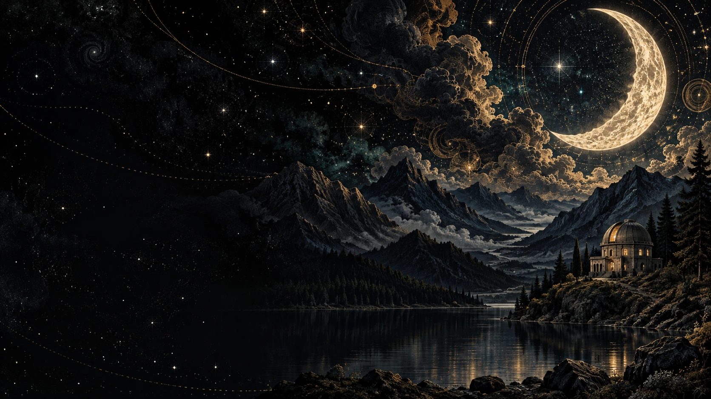

A JOURNAL OF LOOKING CLOSER
For minds
that wander.
Between the last light and the first star,
there is a little room for wonder.
There is more here than first meets the eye.
PAGES FROM THE NIGHTNot everything
Not everything
needs to be explained.
Some things are better noticed. A shape in the clouds.
A familiar sky made strange. A thought you almost missed.
A SMALL RITUALLet the world
Let the world
get a little quieter.
Choose the light. Give yourself a minute.
You don’t have to fill it.
01:00
A little more space
SOMETHING TO TAKE WITH YOU
Keep a little
night.
Download the artwork For your screen. Or simply for a moment you want to return to.